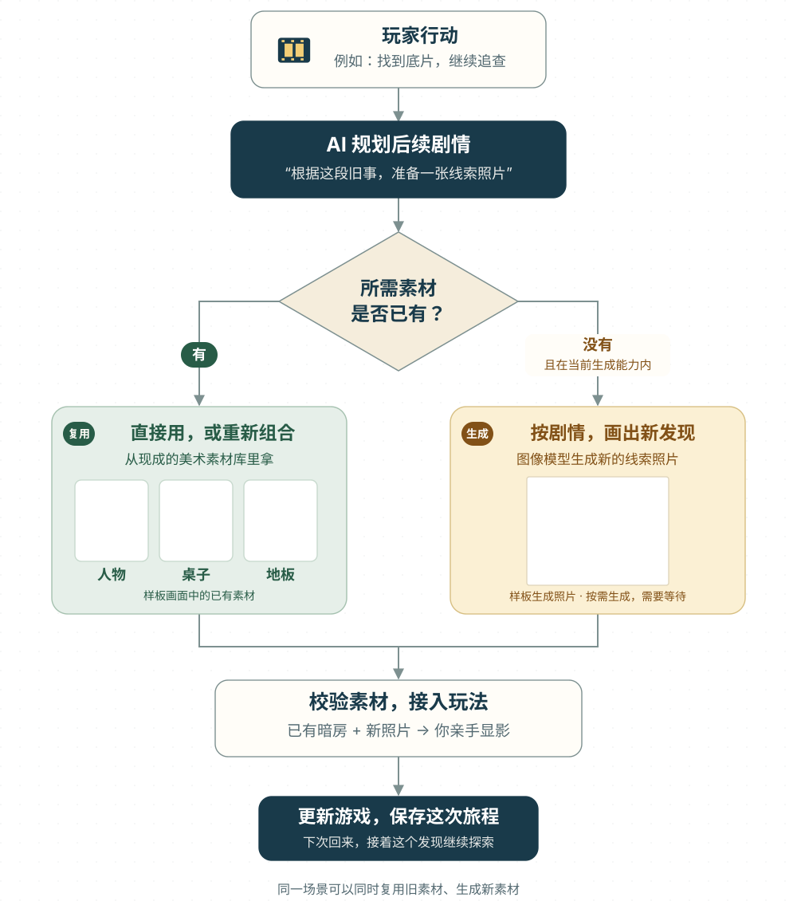

故事，越玩越多
今天找到的一张旧照片，可以成为明天一场新调查的开头。AI 沿着你已经经历的故事，继续写线索、写发现、写下一段冒险。
我们想让游戏的下一集，为你而生。
你发现一封信，AI 写出信背后的秘密；你追着线索走，新的地方、新的发现接着出现。我们想做的，就是一个越玩越大的游戏世界。

AI 像一位随行的编剧：知道你遇见了谁、发现了什么，再接着编出新的故事。我们的目标，是让内容跟着游玩不断出现，让冒险可以继续下去。
今天找到的一张旧照片，可以成为明天一场新调查的开头。AI 沿着你已经经历的故事，继续写线索、写发现、写下一段冒险。
一个新房间里，有门、有桌子、有藏着线索的纸页。你能走进去、翻一翻、动手试一试。故事会变成眼前可以玩的东西。
游戏记住你做过的事，再从这里往下讲。我们希望最终让不同玩家走出不同的故事，让每一次回来都有值得继续探索的理由。
假如信里提到一家失踪的照相馆，你决定追查下去。我们希望 AI 能接住你的好奇心：把线索接着写，把新的地方搭出来，让你一路追到下一个秘密。
你想知道：这家照相馆，究竟发生过什么？
AI 根据这封信，写出后面的秘密和寻找方向。
系统准备新的空间与物件，让线索变成一次探索。
你找到的新东西，又成为下一段故事的开头。
这段故事是愿景示意。我们正用有限场景的样板，一步步把这样的体验做出来。
第一款样板叫《旧街最后一封信》。你帮家人取信，追查旧事，再把照片显出来。AI 已经参与其中的调查材料、房间布置方案和照片内容生成。
真实游戏截图 · 本地运行你先在旧街里取信、认识居民、寻找线索。AI 会参考这些经历，接着准备后面的调查。
我们先做好街道、人物和基本玩法，你走进去开始冒险。
AI 知道前面发生过什么，才有依据把后面的故事接上。
点击上面的四个步骤，看看游戏里会发生什么。
我们正在做的事：让 AI 写出的线索真正接进游戏：你能去找、能动手查，找到之后还能接着发生新的故事。
打开当前线上试玩你说“我要打开这扇门”，AI 可以把这一幕讲得很精彩。但门到底开没开，要看你在哪里、有没有钥匙，以及之前做过什么。结果一旦确认，就会留在这个世界里。
把自由表达变成行动意图，让人物和世界作出自然的回应。
查地点、物品、任务和人物关系。满足条件才通过，不满足就说清原因。
把物品、任务和关系的变化一起保存。同一个动作重试，也只生效一次。
你就在门前，但背包里没有钥匙。
未通过 · 缺少钥匙AI 可以提示你去哪里找钥匙，但不能只写一句“门开了”就替你放行。
这是预设的解释示例，不连接游戏存档。示例中，开门需要人在门前、持有钥匙并已获准进入。
系统保留一份以它为准的“世界账本”。AI 描述故事时参考它，规则判断行动时检查它，行动成功后再更新它。
这是关系规则的一个例子。能否借到钥匙，取决于真实记录的帮助和当前条件。AI 可以换一种说法，但不能随口改掉已经发生的事。
一起成功，或一起不发生。一次行动涉及的物品、任务和关系作为一个整体写入，避免“东西扣了，任务却没完成”。
选择有后果，回来还能接着玩。失败能知道原因，成功有记录；人物的态度、物品归属和任务进展都能延续下去。
AI 让世界会说话。
规则让世界讲道理，存档让世界不会忘记。
这里介绍 RPG 系统的混合架构。Prolog 服务已独立验证；旧街空间样板目前使用既有的规则与存档链路，尚未接入新服务。
接下来：确认的新内容，如何变成看得见的场景？拿旧街样板举个例子：你找到一张底片，AI 准备一张承接旧事的新照片。台子、搁架和照片夹沿用已有素材，新的发现则按剧情生成。


同一场景可以同时复用旧素材、生成新素材。图示以当前样板为例，生成范围包括线索照片；更多角色与场景类型是后续扩展方向。
我们已经把 AI 生成的调查材料、房间布置方案和照片接入样板。现在正把它们串成更连贯、更好玩的体验；“无限探索”仍是接下来要实现的目标。
接下来会增加更多场景和玩法，改善生成速度与故事质量。这里展示的是研发中的样板，线上试玩可能尚未包含全部新内容。
试玩当前发布版本我们想让玩家进入同一个会变化的世界：可以一起探索、分工完成任务，也可以在不同时间留下帮助。AI 再根据大家真正改变的事情，接着写后续故事。
这套 2D 探索系统的首款多人样板尚未完成。以下为根据项目规划整理的目标体验。
在同一张地图遇见朋友，一起调查场景、交流线索，再决定往哪里走。
围绕一个共同目标分工：收集材料、修复设施、打开道路。大家的贡献汇合成同一个结果。
留下路线提示、有限物资或修复成果。短期痕迹可以淡去，共同完成的重要工程可以留下长期变化。
推进顺序：先让两名玩家在同场看见彼此，再验证一个共享动作，最后扩展共同任务。完整玩法与正式联机体验仍待样板验证。
再往前走一步：我们希望每个人都能当游戏创作者。告诉 AI 想玩什么、想学什么，它就能帮助搭出故事、场景和任务，让你走进去玩，也让别人来体验。
未来，你可以这样说
“带学生去火星探险，找出基地为什么缺水。”
这个想法可以变成一场调查：走进基地、采集线索、检查供水设备，再用学到的知识解决问题。
设想中的创作方式 · 尚未上线“让我进入一座生态小岛，查清鱼为什么越来越少。”
玩家可以观察水质、记录生物、比较假设，再尝试改变环境条件。未来希望把经过核对的科学知识与模拟规则接进游戏，让提问、实验和发现成为玩法。
想象空间：科普体验、实验教学、科学问题的互动演示。
“把这节水循环课，做成一场小镇缺水调查。”
老师给出教材与学习目标，AI 帮助编出角色、线索和任务。学生寻找水源、追踪雨水、修复供水，在行动中解释自己学到的知识；老师审核内容与难度。
想象空间：课程冒险、分层练习、小组任务。
“做一个适合我英语水平的旅行游戏，今天练问路和入住。”
玩家走进车站、咖啡馆和酒店，和 AI 角色交谈、完成任务。未来可以根据学习程度调整表达和提示，把不熟悉的词放回下一段故事里反复练习。
想象空间：情境口语、分级剧情、个性化复习。
以上为未来应用设想，尚未作为产品功能上线。科学与教学内容需要可靠资料、专业审核和学习效果验证。
这是我们希望打开的下一扇门。